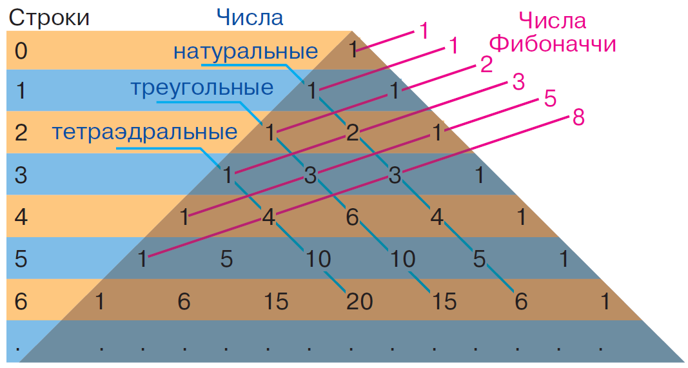
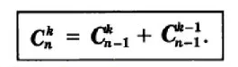

Треугольник Паскаля
Треугольник Паскаля - бесконечная таблица треугольной формы, в которой по боковым сторонам стоят единицы и всякое число, кроме этих боковых единиц, а каждое число равно сумме двух расположенных над ним чисел.
Основная формула для расчета каждого числа в треугольнике: 
«Треугольник Паскаля так прост, что выписать его сможет даже десятилетний ребенок. В то же время он таит в себе неисчерпаемые сокровища и связывает воедино различные аспекты математики, не имеющие на первый взгляд между собой ничего общего. Столь необычные свойства позволяют считать треугольник Паскаля одной из наиболее изящных схем во всей математике» – Мартин Гарднер, американский математик-любитель, популяризатор науки С треугольником Паскаля очень тесно связан бином Ньютона, мы уже поговорили именно о нем.